CODING AGENTS AS PIXEL WORLD MODELS
traex/DeepSeek-V4.1-Flash · instance_preservation_0035
点击播放 · 原生 RGB 像素
此结果可播放，但该运行尚未通过最终提交审核。页面展示不代表评测通过。
逐轮保存的候选
回放视频、检查图与代码变化。
每份候选均可单独播放。实际图片检查记录在下方工具轨迹中。
候选 01播放与检查图
点击播放 · 原生 RGB 像素

展开代码变化
--- 上一保存版本
+++ 本次保存版本
@@ -0,0 +1,645 @@
+"""Procedural two-player basketball animation for the PixelWorld task."""
+
+from __future__ import annotations
+
+import json
+import math
+import random
+from pathlib import Path
+
+import numpy as np
+from PIL import Image, ImageDraw, ImageFilter
+
+from artifact_io import save
+
+
+ROOT = Path(__file__).resolve().parent
+SPEC = json.loads((ROOT / "task_spec.json").read_text())
+WIDTH = SPEC["width"]
+HEIGHT = SPEC["height"]
+FRAMES = SPEC["frames"]
+FPS = SPEC["fps"]
+SS = 4 # Supersampling factor for clean, compact final frames.
+W = WIDTH * SS
+H = HEIGHT * SS
+
+
+def sc(value: float) -> int:
+ return int(round(value * SS))
+
+
+def pt(x: float, y: float) -> tuple[int, int]:
+ return sc(x), sc(y)
+
+
+def rgba(color: tuple[int, int, int], alpha: int = 255) -> tuple[int, int, int, int]:
+ return color[0], color[1], color[2], alpha
+
+
+def mix(a: tuple[int, int, int], b: tuple[int, int, int], t: float) -> tuple[int, int, int]:
+ t = max(0.0, min(1.0, t))
+ return tuple(int(round(a[i] * (1.0 - t) + b[i] * t)) for i in range(3))
+
+
+def lighten(color: tuple[int, int, int], amount: float) -> tuple[int, int, int]:
+ return tuple(int(round(c + (255 - c) * amount)) for c in color)
+
+
+def darken(color: tuple[int, int, int], amount: float) -> tuple[int, int, int]:
+ return tuple(int(round(c * (1.0 - amount))) for c in color)
+
+
+def line(draw: ImageDraw.ImageDraw, points, fill, width, joint="curve"):
+ draw.line([pt(*p) for p in points], fill=fill, width=sc(width), joint=joint)
+
+
+def capsule(
+ draw: ImageDraw.ImageDraw,
+ p1: tuple[float, float],
+ p2: tuple[float, float],
+ width: float,
+ fill,
+ outline=None,
+ outline_extra: float = 0.9,
+ highlight: float = 0.0,
+):
+ if outline is not None:
+ line(draw, [p1, p2], outline, width + 2 * outline_extra)
+ r = (width + 2 * outline_extra) / 2
+ draw.ellipse(
+ [sc(p1[0] - r), sc(p1[1] - r), sc(p1[0] + r), sc(p1[1] + r)],
+ fill=outline,
+ )
+ draw.ellipse(
+ [sc(p2[0] - r), sc(p2[1] - r), sc(p2[0] + r), sc(p2[1] + r)],
+ fill=outline,
+ )
+ line(draw, [p1, p2], fill, width)
+ r = width / 2
+ draw.ellipse([sc(p1[0] - r), sc(p1[1] - r), sc(p1[0] + r), sc(p1[1] + r)], fill=fill)
+ draw.ellipse([sc(p2[0] - r), sc(p2[1] - r), sc(p2[0] + r), sc(p2[1] + r)], fill=fill)
+ if highlight > 0:
+ dx = p2[0] - p1[0]
+ dy = p2[1] - p1[1]
+ length = max(0.001, math.hypot(dx, dy))
+ ox = -dy / length * width * 0.18
+ oy = dx / length * width * 0.18
+ hp1 = (p1[0] + ox, p1[1] + oy)
+ hp2 = (p2[0] + ox, p2[1] + oy)
+ line(draw, [hp1, hp2], rgba(lighten(fill[:3], highlight), fill[3] if len(fill) > 3 else 255), max(0.45, width * 0.19))
+
+
+def polygon(draw: ImageDraw.ImageDraw, points, fill, outline=None, outline_width=0.8):
+ scaled = [pt(*p) for p in points]
+ draw.polygon(scaled, fill=fill)
+ if outline is not None:
+ draw.line(scaled + [scaled[0]], fill=outline, width=sc(outline_width), joint="curve")
+
+
+def radial_glow(base: Image.Image, center, radius, color, strength):
+ overlay = Image.new("RGBA", base.size, (0, 0, 0, 0))
+ od = ImageDraw.Draw(overlay)
+ cx, cy = center
+ for i in range(18, 0, -1):
+ t = i / 18
+ rr = radius * t
+ alpha = int(strength * (1.0 - t) ** 1.7)
+ od.ellipse(
+ [sc(cx - rr), sc(cy - rr * 0.72), sc(cx + rr), sc(cy + rr * 0.72)],
+ fill=rgba(color, alpha),
+ )
+ return Image.alpha_composite(base.convert("RGBA"), overlay)
+
+
+def make_background() -> Image.Image:
+ """Create a warm, dusk-lit neighborhood court with a soft depth of field."""
+ y = np.linspace(0.0, 1.0, H, dtype=np.float32)[:, None, None]
+ sky_top = np.array([23, 44, 70], dtype=np.float32)
+ sky_mid = np.array([101, 101, 119], dtype=np.float32)
+ sky_low = np.array([237, 163, 105], dtype=np.float32)
+
+ sky = np.empty((H, W, 3), dtype=np.float32)
+ upper = y < 0.68
+ sky[:] = sky_mid
+ t1 = np.clip(y / 0.68, 0.0, 1.0)
+ sky = np.where(upper, sky_top * (1 - t1) + sky_mid * t1, sky)
+ t2 = np.clip((y - 0.68) / 0.32, 0.0, 1.0)
+ sky = np.where(~upper, sky_mid * (1 - t2) + sky_low * t2, sky)
+
+ xx = np.linspace(0.0, 1.0, W, dtype=np.float32)[None, :, None]
+ warm = np.clip(1.0 - np.abs(xx - 0.80) * 1.7, 0.0, 1.0)
+ sky += warm * np.array([42, 24, 4], dtype=np.float32) * np.clip((y - 0.12) / 0.72, 0, 1)
+
+ # Ground plane: cool asphalt foreground, warmer haze at the horizon.
+ ground_mask = y >= 0.66
+ horizon = np.array([111, 104, 101], dtype=np.float32)
+ asphalt = np.array([46, 55, 63], dtype=np.float32)
+ tg = np.clip((y - 0.66) / 0.34, 0.0, 1.0)
+ ground = horizon * (1 - tg) + asphalt * tg
+ ground = ground + np.array([7, 11, 11], dtype=np.float32) * np.clip(1 - np.abs(xx - 0.5) * 1.4, 0, 1)
+ sky = np.where(ground_mask, ground, sky)
+
+ rng = np.random.default_rng(12)
+ noise = rng.normal(0.0, 1.55, (H, W, 1)).astype(np.float32)
+ sky += noise
+ image = Image.fromarray(np.clip(sky, 0, 255).astype(np.uint8), "RGB").convert("RGBA")
+ image = radial_glow(image, (211, 67), 67, (255, 181, 99), 135)
+
+ draw = ImageDraw.Draw(image, "RGBA")
+
+ # A low sun behind the skyline.
+ draw.ellipse([sc(205), sc(58), sc(217), sc(70)], fill=rgba((255, 218, 153), 210))
+
+ # Distant buildings and water tower.
+ random.seed(23)
+ x = -8.0
+ while x < WIDTH + 8:
+ bw = random.uniform(15, 28)
+ bh = random.uniform(17, 39)
+ top = 94.0 - bh
+ tone = random.choice([(42, 48, 63), (48, 52, 67), (54, 56, 70)])
+ draw.rectangle([sc(x), sc(top), sc(x + bw), sc(94)], fill=rgba(tone, 245))
+ if random.random() < 0.55:
+ draw.rectangle([sc(x + 2), sc(top - 3), sc(x + bw - 2), sc(top)], fill=rgba(darken(tone, 0.12), 245))
+ for wx in np.arange(x + 3, x + bw - 2, 4.4):
+ for wy in np.arange(top + 4, 91, 4.7):
+ if random.random() < 0.23:
+ draw.rectangle([sc(wx), sc(wy), sc(wx + 1.35), sc(wy + 1.15)], fill=rgba((238, 181, 105), random.randint(95, 170)))
+ x += bw + random.uniform(1.5, 4.0)
+
+ # Water tower silhouette.
+ draw.rectangle([sc(157), sc(50), sc(160), sc(80)], fill=rgba((45, 48, 59), 230))
+ draw.rectangle([sc(175), sc(50), sc(178), sc(80)], fill=rgba((45, 48, 59), 230))
+ draw.rounded_rectangle([sc(155), sc(42), sc(180), sc(57)], radius=sc(3.5), fill=rgba((54, 55, 67), 245))
+ draw.polygon([pt(154, 44), pt(167.5, 37), pt(181, 44)], fill=rgba((41, 45, 58), 245))
+
+ # Chain-link fence, drawn on its own layer so it remains subtle.
+ fence = Image.new("RGBA", image.size, (0, 0, 0, 0))
+ fd = ImageDraw.Draw(fence, "RGBA")
+ for x0 in np.arange(-12, WIDTH + 12, 8.0):
+ fd.line([pt(x0, 69), pt(x0 + 28, 97)], fill=rgba((165, 169, 166), 52), width=sc(0.55))
+ fd.line([pt(x0, 97), pt(x0 + 28, 69)], fill=rgba((165, 169, 166), 52), width=sc(0.55))
+ mask = Image.new("L", fence.size, 0)
+ md = ImageDraw.Draw(mask)
+ md.rectangle([0, sc(69), W, sc(97)], fill=255)
+ fence.putalpha(Image.composite(fence.getchannel("A"), Image.new("L", fence.size, 0), mask))
+ image = Image.alpha_composite(image, fence)
+ draw = ImageDraw.Draw(image, "RGBA")
+ draw.line([pt(0, 69), pt(256, 69)], fill=rgba((80, 87, 90), 180), width=sc(1.2))
+ draw.line([pt(0, 97), pt(256, 97)], fill=rgba((65, 70, 73), 200), width=sc(1.4))
+ for px in (21, 84, 147, 210, 256):
+ draw.rectangle([sc(px - 0.7), sc(68), sc(px + 0.7), sc(98)], fill=rgba((67, 74, 77), 230))
+
+ # Painted court surface and perspective markings.
+ draw.polygon(
+ [pt(0, 97), pt(256, 97), pt(256, 144), pt(0, 144)],
+ fill=rgba((42, 69, 72), 175),
+ )
+ draw.polygon(
+ [pt(177, 97), pt(248, 97), pt(256, 144), pt(165, 144)],
+ fill=rgba((125, 68, 47), 94),
+ )
+ draw.line([pt(0, 110), pt(256, 108)], fill=rgba((207, 189, 156), 75), width=sc(1.0))
+ draw.line([pt(0, 131), pt(256, 128)], fill=rgba((207, 189, 156), 55), width=sc(0.8))
+ draw.arc([sc(166), sc(92), sc(284), sc(151)], 132, 253, fill=rgba((232, 217, 184), 135), width=sc(1.4))
+ draw.line([pt(190, 100), pt(181, 143)], fill=rgba((229, 212, 178), 88), width=sc(0.9))
+
+ # Fine surface texture, strongest in the foreground.
+ for _ in range(450):
+ tx = random.uniform(0, WIDTH)
+ ty = random.uniform(100, 144)
+ alpha = int(10 + 22 * (ty - 100) / 44)
+ length = random.uniform(0.4, 1.8)
+ col = (174, 176, 165) if random.random() < 0.55 else (19, 31, 35)
+ draw.line([pt(tx, ty), pt(tx + length, ty + random.uniform(-0.2, 0.2))], fill=rgba(col, alpha), width=sc(0.45))
+
+ return image
+
+
+def draw_hoop(image: Image.Image, frame: int):
+ draw = ImageDraw.Draw(image, "RGBA")
+ pole = (55, 60, 65)
+ rim = (223, 91, 43)
+ draw.rectangle([sc(247), sc(38), sc(250.2), sc(131)], fill=rgba(pole, 255))
+ draw.rectangle([sc(245.8), sc(38), sc(251.4), sc(42)], fill=rgba((31, 35, 39), 255))
+ draw.line([pt(244, 127), pt(250, 127)], fill=rgba((28, 32, 35), 220), width=sc(1.3))
+
+ # Backboard with a restrained reflection and white target box.
+ draw.rectangle([sc(227), sc(19), sc(248), sc(58)], fill=rgba((221, 226, 220), 188), outline=rgba((47, 53, 56), 245), width=sc(1.2))
+ draw.line([pt(229, 21), pt(229, 56)], fill=rgba((255, 255, 255), 105), width=sc(0.8))
+ draw.rectangle([sc(232.2), sc(34.5), sc(243.2), sc(51)], outline=rgba((221, 82, 44), 220), width=sc(1.0))
+
+ # Rim: slightly elliptical in this near-side view.
+ draw.line([pt(222.7, 49.5), pt(240.8, 49.5)], fill=rgba((59, 36, 27), 245), width=sc(1.8))
+ draw.line([pt(223.0, 48.7), pt(240.5, 48.7)], fill=rgba(rim, 255), width=sc(1.05))
+ draw.ellipse([sc(221.7), sc(47.6), sc(224.1), sc(50.0)], outline=rgba(rim, 255), width=sc(0.65))
+ draw.ellipse([sc(239.7), sc(47.6), sc(242.1), sc(50.0)], outline=rgba(rim, 255), width=sc(0.65))
+
+ # Net sways after the ball arrives.
+ sway = 0.0
+ if frame >= 17:
+ sway = (frame - 17) * 0.8 * math.sin((frame - 17) * 1.5)
+ for nx in np.linspace(224.2, 240.0, 6):
+ top = (nx, 50.2)
+ bottom = (231.2 + (nx - 232.1) * 0.48 + sway, 64.2 + abs(nx - 232.1) * 0.10)
+ draw.line([pt(*top), pt(*bottom)], fill=rgba((236, 235, 220), 190), width=sc(0.55))
+ for level in (0.36, 0.68, 0.90):
+ yy = 50.2 + (64.2 - 50.2) * level
+ xl = 224.2 + (231.2 + sway - 224.2) * level
+ xr = 240.0 + (235.2 + sway - 240.0) * level
+ draw.line([pt(xl, yy), pt(xr, yy)], fill=rgba((236, 235, 220), 145), width=sc(0.45))
+
+
+def draw_ground_shadow(image: Image.Image, x: float, y: float, width: float, alpha: int):
+ overlay = Image.new("RGBA", image.size, (0, 0, 0, 0))
+ od = ImageDraw.Draw(overlay, "RGBA")
+ for i in range(7, 0, -1):
+ t = i / 7
+ w = width * (0.52 + 0.48 * t)
+ a = int(alpha * (1.0 - t) ** 1.2)
+ od.ellipse([sc(x - w / 2), sc(y - 2.2 * t), sc(x + w / 2), sc(y + 2.2 * t)], fill=rgba((8, 14, 17), a))
+ return Image.alpha_composite(image, overlay)
+
+
+def draw_ball(image: Image.Image, x: float, y: float, radius: float, rotation: float, alpha: int = 255):
+ overlay = Image.new("RGBA", image.size, (0, 0, 0, 0))
+ d = ImageDraw.Draw(overlay, "RGBA")
+ r = radius
+ if alpha < 255:
+ d.ellipse([sc(x - r - 0.8), sc(y - r - 0.8), sc(x + r + 0.8), sc(y + r + 0.8)], fill=rgba((21, 19, 18), int(alpha * 0.45)))
+ else:
+ d.ellipse([sc(x - r - 0.8), sc(y - r - 0.8), sc(x + r + 0.8), sc(y + r + 0.8)], fill=rgba((21, 19, 18), 230))
+ d.ellipse([sc(x - r), sc(y - r), sc(x + r), sc(y + r)], fill=rgba((215, 94, 33), alpha))
+ d.ellipse([sc(x - r * 0.55), sc(y - r * 0.65), sc(x + r * 0.15), sc(y + r * 0.10)], fill=rgba((245, 151, 63), int(alpha * 0.56)))
+ d.arc([sc(x - r), sc(y - r), sc(x + r), sc(y + r)], 72 + rotation, 250 + rotation, fill=rgba((82, 40, 25), alpha), width=sc(0.72))
+ d.arc([sc(x - r), sc(y - r), sc(x + r), sc(y + r)], 250 + rotation, 430 + rotation, fill=rgba((82, 40, 25), alpha), width=sc(0.72))
+ d.line([pt(x - r * 0.98, y), pt(x + r * 0.98, y)], fill=rgba((94, 43, 27), int(alpha * 0.92)), width=sc(0.68))
+ d.line([pt(x, y - r * 0.98), pt(x, y + r * 0.98)], fill=rgba((94, 43, 27), int(alpha * 0.85)), width=sc(0.62))
+ return Image.alpha_composite(image, overlay)
+
+
+def draw_player(
+ image: Image.Image,
+ x: float,
+ ground: float,
+ jump: float,
+ facing: int,
+ jersey,
+ shorts,
+ skin,
+ shoe,
+ pose: str,
+ frame: int,
+ ball: tuple[float, float] | None = None,
+):
+ """Draw one angular, shaded basketball player using a simple joint rig."""
+ d = ImageDraw.Draw(image, "RGBA")
+ hip = (x, ground - 35.0 + jump)
+ shoulder = (x - 0.6 * facing, hip[1] - 25.0 + (1.2 if pose == "guard" else 0.0))
+ head = (shoulder[0] + 3.2 * facing, shoulder[1] - 11.8)
+
+ # Pose values are deliberately small at this scale; they read as weight shifts.
+ if pose == "dribble":
+ crouch = 3.0
+ hip = (x, hip[1] + crouch)
+ shoulder = (shoulder[0], shoulder[1] + crouch * 0.72)
+ head = (head[0], head[1] + crouch * 0.72)
+ knee_bend = 2.2
+ arm_low = 2.0
+ elif pose == "gather":
+ hip = (x + 0.8 * facing, hip[1] + 4.8)
+ shoulder = (shoulder[0] + 1.2 * facing, shoulder[1] + 3.5)
+ head = (head[0] + 1.2 * facing, head[1] + 3.5)
+ knee_bend = 3.5
+ arm_low = 0.0
+ elif pose == "shoot":
+ hip = (x + 2.0 * facing, hip[1])
+ shoulder = (shoulder[0] + 2.2 * facing, shoulder[1] - 0.8)
+ head = (head[0] + 2.2 * facing, head[1] - 0.8)
+ knee_bend = 4.2
+ arm_low = -1.0
+ elif pose == "guard":
+ hip = (x, hip[1] + 2.3)
+ shoulder = (shoulder[0], shoulder[1] + 1.8)
+ head = (head[0], head[1] + 1.8)
+ knee_bend = 3.1
+ arm_low = 1.0
+ else: # land
+ hip = (x + 0.4 * facing, hip[1] + 2.8)
+ shoulder = (shoulder[0], shoulder[1] + 2.0)
+ head = (head[0], head[1] + 2.0)
+ knee_bend = 3.4
+ arm_low = 1.5
+
+ outline = rgba((25, 27, 31), 248)
+ back_skin = darken(skin, 0.12)
+
+ # Back leg, slightly darker for depth.
+ hip_b = (hip[0] - 3.1 * facing, hip[1] + 0.8)
+ if jump < -2.0 or pose == "shoot":
+ knee_b = (hip[0] - 7.4 * facing, hip[1] + 10.8)
+ ankle_b = (hip[0] - 10.6 * facing, hip[1] + 21.0)
+ else:
+ knee_b = (hip[0] - 5.2 * facing, hip[1] + 15.0 + knee_bend)
+ ankle_b = (hip[0] - 7.8 * facing, ground - 2.2)
+ capsule(d, hip_b, knee_b, 6.0, rgba(back_skin), outline, 0.75, 0.12)
+ capsule(d, knee_b, ankle_b, 4.7, rgba(back_skin), outline, 0.65, 0.12)
+ draw_shoe(d, ankle_b, facing, darken(shoe, 0.15), outline, back=True)
+
+ # Torso / jersey silhouette.
+ torso = [
+ (shoulder[0] - 7.1, shoulder[1] - 1.0),
+ (shoulder[0] + 6.0, shoulder[1] - 0.4),
+ (hip[0] + 5.3, hip[1] + 3.0),
+ (hip[0] - 5.4, hip[1] + 3.0),
+ ]
+ polygon(d, torso, rgba(jersey), outline, 1.0)
+ # Side panel and waistband.
+ polygon(
+ d,
+ [
+ (shoulder[0] + 3.9, shoulder[1] + 1.0),
+ (shoulder[0] + 6.0, shoulder[1] + 0.1),
+ (hip[0] + 5.3, hip[1] + 2.0),
+ (hip[0] + 2.6, hip[1] + 2.0),
+ ],
+ rgba(darken(jersey, 0.17), 220),
+ )
+ line(d, [(shoulder[0] - 5.8 * facing, shoulder[1] + 1.2), (hip[0] - 3.9, hip[1] + 1.8)], rgba(lighten(jersey, 0.22), 110), 0.7)
+ line(d, [(hip[0] - 5.1, hip[1] + 2.8), (hip[0] + 5.0, hip[1] + 2.8)], rgba((240, 234, 215), 190), 0.8)
+
+ # Neck and head.
+ capsule(d, (shoulder[0] + 0.7 * facing, shoulder[1] - 1.4), (head[0] - 0.2 * facing, head[1] + 4.6), 4.0, rgba(skin), outline, 0.55, 0.13)
+ hr = 7.4
+ d.ellipse([sc(head[0] - hr), sc(head[1] - hr), sc(head[0] + hr), sc(head[1] + hr)], fill=rgba(skin), outline=outline, width=sc(0.95))
+ # Face plane and nose toward the action.
+ face_x0 = head[0] + 0.2 * facing
+ face_x1 = head[0] + 6.4 * facing
+ d.ellipse(
+ [sc(min(face_x0, face_x1)), sc(head[1] - 5.8), sc(max(face_x0, face_x1)), sc(head[1] + 4.0)],
+ fill=rgba(lighten(skin, 0.08), 220),
+ )
+ nose_x = head[0] + 6.2 * facing
+ d.polygon([pt(nose_x, head[1] - 0.5), pt(nose_x + 2.2 * facing, head[1] + 1.2), pt(nose_x - 0.2, head[1] + 2.0)], fill=rgba(skin, 255))
+ eye = (head[0] + 3.0 * facing, head[1] - 1.4)
+ d.ellipse([sc(eye[0] - 0.45), sc(eye[1] - 0.45), sc(eye[0] + 0.45), sc(eye[1] + 0.45)], fill=rgba((31, 26, 25), 245))
+ # Short cropped hair and a subtle brow.
+ d.pieslice([sc(head[0] - 7.5), sc(head[1] - 7.8), sc(head[0] + 7.2), sc(head[1] + 3.2)], 176, 356, fill=rgba((27, 25, 27), 255))
+ d.arc([sc(head[0] - 6.8), sc(head[1] - 7.0), sc(head[0] + 6.9), sc(head[1] + 1.8)], 188, 342, fill=rgba((53, 43, 40), 200), width=sc(0.55))
+ d.line([pt(head[0] + 1.7 * facing, head[1] - 3.1), pt(head[0] + 4.3 * facing, head[1] - 2.8)], fill=rgba((40, 29, 27), 230), width=sc(0.55))
+ mouth_x0 = head[0] + 1.2 * facing
+ mouth_x1 = head[0] + 5.1 * facing
+ d.arc(
+ [sc(min(mouth_x0, mouth_x1)), sc(head[1] + 2.2), sc(max(mouth_x0, mouth_x1)), sc(head[1] + 4.1)],
+ 15,
+ 160,
+ fill=rgba((72, 38, 32), 220),
+ width=sc(0.55),
+ )
+
+ # Shorts.
+ shorts_poly = [
+ (hip[0] - 5.7, hip[1] + 1.5),
+ (hip[0] + 5.6, hip[1] + 1.5),
+ (hip[0] + 5.8, hip[1] + 10.4),
+ (hip[0] + 0.7, hip[1] + 10.1),
+ (hip[0] - 0.5, hip[1] + 10.5),
+ (hip[0] - 6.2, hip[1] + 10.0),
+ ]
+ polygon(d, shorts_poly, rgba(shorts), outline, 0.8)
+ line(d, [(hip[0] - 5.4, hip[1] + 2.3), (hip[0] + 5.3, hip[1] + 2.3)], rgba(lighten(shorts, 0.18), 145), 0.55)
+ d.line([pt(hip[0] + 0.2, hip[1] + 4.0), pt(hip[0] + 0.1, hip[1] + 9.9)], fill=rgba(darken(shorts, 0.24), 170), width=sc(0.6))
+
+ # Front leg.
+ hip_f = (hip[0] + 3.0 * facing, hip[1] + 1.0)
+ if jump < -2.0 or pose == "shoot":
+ knee_f = (hip[0] + 7.3 * facing, hip[1] + 11.7)
+ ankle_f = (hip[0] + 10.8 * facing, hip[1] + 22.6)
+ else:
+ knee_f = (hip[0] + 6.3 * facing, hip[1] + 15.8 + knee_bend)
+ ankle_f = (hip[0] + 8.5 * facing, ground - 2.0)
+ capsule(d, hip_f, knee_f, 6.5, rgba(skin), outline, 0.8, 0.15)
+ capsule(d, knee_f, ankle_f, 5.0, rgba(skin), outline, 0.7, 0.15)
+ draw_shoe(d, ankle_f, facing, shoe, outline)
+
+ # Back arm behind torso.
+ shoulder_b = (shoulder[0] - 4.3 * facing, shoulder[1] + 2.0)
+ if pose == "shoot":
+ elbow_b = (shoulder[0] - 2.0 * facing, shoulder[1] - 9.0)
+ wrist_b = (shoulder[0] + 1.4 * facing, shoulder[1] - 16.2)
+ elif pose == "guard":
+ elbow_b = (shoulder[0] - 8.5 * facing, shoulder[1] - 1.0)
+ wrist_b = (shoulder[0] - 13.2 * facing, shoulder[1] - 8.0)
+ elif pose == "gather":
+ elbow_b = (shoulder[0] - 4.0 * facing, shoulder[1] + 7.0)
+ wrist_b = (shoulder[0] + 2.0 * facing, shoulder[1] + 11.0)
+ else:
+ elbow_b = (shoulder[0] - 7.0 * facing, shoulder[1] + 9.0)
+ wrist_b = (shoulder[0] - 4.0 * facing, shoulder[1] + 16.0 + arm_low)
+ capsule(d, shoulder_b, elbow_b, 4.3, rgba(back_skin), outline, 0.55, 0.12)
+ capsule(d, elbow_b, wrist_b, 3.6, rgba(back_skin), outline, 0.5, 0.12)
+ draw_hand(d, wrist_b, facing, back_skin, outline)
+
+ # Front arm follows the ball during the dribble and extends on the release.
+ shoulder_f = (shoulder[0] + 4.3 * facing, shoulder[1] + 1.3)
+ if pose == "dribble" and ball is not None:
+ elbow_f = (shoulder[0] + 9.4 * facing, shoulder[1] + 8.0)
+ wrist_f = (ball[0] - 0.5, min(ball[1] - 4.0, shoulder[1] + 16.5))
+ elif pose == "gather":
+ elbow_f = (shoulder[0] + 6.0 * facing, shoulder[1] + 7.5)
+ wrist_f = (shoulder[0] + 8.0 * facing, shoulder[1] + 2.0)
+ elif pose == "shoot":
+ elbow_f = (shoulder[0] + 4.0 * facing, shoulder[1] - 8.4)
+ wrist_f = (shoulder[0] + 1.3 * facing, shoulder[1] - 17.4)
+ elif pose == "guard":
+ elbow_f = (shoulder[0] + 9.5 * facing, shoulder[1] - 0.5)
+ wrist_f = (shoulder[0] + 13.5 * facing, shoulder[1] - 8.5)
+ else:
+ elbow_f = (shoulder[0] + 8.0 * facing, shoulder[1] + 8.0)
+ wrist_f = (shoulder[0] + 10.5 * facing, shoulder[1] + 16.0)
+ capsule(d, shoulder_f, elbow_f, 4.7, rgba(skin), outline, 0.6, 0.14)
+ capsule(d, elbow_f, wrist_f, 3.8, rgba(skin), outline, 0.55, 0.14)
+ draw_hand(d, wrist_f, facing, skin, outline)
+
+ return image
+
+
+def draw_hand(draw: ImageDraw.ImageDraw, p, facing, skin, outline):
+ r = 2.15
+ draw.ellipse([sc(p[0] - r), sc(p[1] - r), sc(p[0] + r), sc(p[1] + r)], fill=rgba(skin), outline=outline, width=sc(0.55))
+ draw.ellipse([sc(p[0] + 0.4 * facing - 1.2), sc(p[1] - 0.5), sc(p[0] + 0.4 * facing + 1.2), sc(p[1] + 1.7)], fill=rgba(lighten(skin, 0.08), 210))
+
+
+def draw_shoe(draw: ImageDraw.ImageDraw, ankle, facing, color, outline, back=False):
+ x, y = ankle
+ length = 8.2 if not back else 7.5
+ x0 = x - 3.2 * facing
+ x1 = x0 + length * facing
+ sole_y = y + 2.2
+ polygon(
+ draw,
+ [
+ (x0, y - 1.4),
+ (x1 - 0.6 * facing, y - 2.1),
+ (x1 + 0.7 * facing, y + 1.1),
+ (x0 + 0.2 * facing, sole_y),
+ ],
+ rgba(color),
+ outline,
+ 0.65,
+ )
+ draw.line([pt(x0, sole_y - 0.1), pt(x1 + 0.4 * facing, y + 1.1)], fill=rgba((232, 229, 218), 225), width=sc(0.65))
+ draw.line([pt(x0 + 1.1 * facing, y - 0.3), pt(x1 - 1.2 * facing, y - 0.6)], fill=rgba(lighten(color, 0.23), 140), width=sc(0.42))
+
+
+def ball_and_poses(frame: int):
+ """Return ball position/rotation plus rig states for the action beat."""
+ if frame <= 7:
+ dribble_y = [103.5, 111.0, 118.2, 113.0, 103.0, 96.2, 108.0, 117.0][frame]
+ ball = (127.2 + 0.8 * math.sin(frame * 1.8), dribble_y)
+ pose_o, pose_d = "dribble", "guard"
+ jump_o = 0.0
+ jump_d = 0.0
+ elif frame <= 10:
+ gather = [
+ (123.2, 101.0),
+ (119.7, 88.0),
+ (118.2, 74.0),
+ ][frame - 8]
+ ball = gather
+ pose_o, pose_d = "gather", "guard"
+ jump_o = -2.0 if frame >= 9 else -1.0
+ jump_d = 0.0
+ elif frame <= 17:
+ idx = frame - 11
+ shot_positions = [
+ (119.0, 61.0),
+ (123.6, 51.0),
+ (134.2, 41.2),
+ (150.5, 32.2),
+ (169.0, 25.5),
+ (188.7, 23.5),
+ (207.0, 28.0),
+ ]
+ ball = shot_positions[idx]
+ pose_o, pose_d = "shoot", "guard"
+ jump_o = [-5.0, -8.0, -11.5, -13.2, -12.0, -9.2, -5.6][idx]
+ jump_d = [0.0, -2.0, -4.5, -6.0, -4.0, -1.0, 0.0][idx]
+ else:
+ ball = [(220.8, 37.8), (225.3, 49.8), (228.5, 57.5)][frame - 18]
+ pose_o, pose_d = "land", "land"
+ jump_o = [-2.0, 0.0, 0.0][frame - 18]
+ jump_d = [0.0, 0.0, 0.0][frame - 18]
+ return ball, pose_o, pose_d, jump_o, jump_d
+
+
+def draw_net_ball_contact(image: Image.Image, frame: int):
+ if frame < 17:
+ return image
+ overlay = Image.new("RGBA", image.size, (0, 0, 0, 0))
+ d = ImageDraw.Draw(overlay, "RGBA")
+ pulse = max(0, 3 - abs(frame - 17))
+ for i in range(4):
+ angle = -1.2 + i * 0.8
+ r0 = 3.2 + pulse * 0.5
+ x0 = 232.2 + math.cos(angle) * r0
+ y0 = 54.0 + math.sin(angle) * r0 * 0.55
+ d.line([pt(x0, y0), pt(x0 + math.cos(angle) * 4.0, y0 + math.sin(angle) * 2.2)], fill=rgba((247, 224, 174), 55), width=sc(0.5))
+ return Image.alpha_composite(image, overlay)
+
+
+def render_frame(frame: int, background: Image.Image) -> Image.Image:
+ image = background.copy()
+ ball, pose_o, pose_d, jump_o, jump_d = ball_and_poses(frame)
+
+ # Hoop sits behind the action.
+ draw_hoop(image, frame)
+
+ # Ground shadows shrink when players lift off.
+ image = draw_ground_shadow(image, 100.0, 127.0, 35.0 - max(0.0, -jump_o) * 0.45, 100 + int(max(0.0, -jump_o) * 3))
+ image = draw_ground_shadow(image, 149.0, 127.0, 32.0 - max(0.0, -jump_d) * 0.50, 88 + int(max(0.0, -jump_d) * 3))
+
+ # Offensive player: dark skin, deep red jersey, charcoal shorts.
+ image = draw_player(
+ image,
+ 100.0,
+ 126.0,
+ jump_o,
+ facing=1,
+ jersey=(172, 55, 47),
+ shorts=(42, 42, 48),
+ skin=(116, 69, 49),
+ shoe=(232, 226, 211),
+ pose=pose_o,
+ frame=frame,
+ ball=ball,
+ )
+ # Defender: teal jersey and dark shorts, in a compact guarding stance.
+ image = draw_player(
+ image,
+ 148.5,
+ 126.0,
+ jump_d,
+ facing=-1,
+ jersey=(37, 115, 119),
+ shorts=(34, 42, 53),
+ skin=(177, 117, 82),
+ shoe=(226, 218, 196),
+ pose=pose_d,
+ frame=frame,
+ ball=ball,
+ )
+
+ # Ball motion trails sell the fast release despite the low frame rate.
+ if 11 <= frame <= 18:
+ prev_ball = ball_and_poses(max(0, frame - 1))[0]
+ prev2_ball = ball_and_poses(max(0, frame - 2))[0]
+ image = draw_ball(image, prev2_ball[0], prev2_ball[1], 4.7, (frame - 2) * 18.0, 32)
+ image = draw_ball(image, prev_ball[0], prev_ball[1], 4.9, (frame - 1) * 18.0, 58)
+
+ ball_radius = 5.2
+ if frame >= 18:
+ ball_radius = 5.0
+ image = draw_ball(image, ball[0], ball[1], ball_radius, frame * 19.0, 255)
+ image = draw_net_ball_contact(image, frame)
+
+ # Warm rim light and vignette keep the low-resolution frame cohesive.
+ overlay = Image.new("RGBA", image.size, (0, 0, 0, 0))
+ od = ImageDraw.Draw(overlay, "RGBA")
+ od.rectangle([0, 0, W, H], fill=rgba((12, 20, 29), 0))
+ image = Image.alpha_composite(image, overlay)
+ image = add_vignette_and_grain(image, frame)
+ return image
+
+
+def add_vignette_and_grain(image: Image.Image, frame: int) -> Image.Image:
+ yy, xx = np.mgrid[0:H, 0:W]
+ cx, cy = W * 0.50, H * 0.48
+ nx = (xx - cx) / (W * 0.62)
+ ny = (yy - cy) / (H * 0.68)
+ radius = np.sqrt(nx * nx + ny * ny)
+ vignette = np.clip((radius - 0.58) / 0.62, 0.0, 1.0)[..., None]
+ arr = np.asarray(image.convert("RGB"), dtype=np.float32)
+ arr = arr * (1.0 - 0.22 * vignette)
+ # A very light grade gives the sunset sky and teal court a shared warmth.
+ arr[..., 0] += 2.0
+ arr[..., 2] -= 1.0
+ rng = np.random.default_rng(1000 + frame)
+ grain = rng.normal(0.0, 1.15, (H, W, 1)).astype(np.float32)
+ arr = np.clip(arr + grain, 0, 255).astype(np.uint8)
+ return Image.fromarray(arr, "RGB")
+
+
+def main():
+ background = make_background()
+ frames = []
+ for frame in range(FRAMES):
+ high = render_frame(frame, background)
+ final = high.resize((WIDTH, HEIGHT), Image.Resampling.LANCZOS)
+ frames.append(np.asarray(final, dtype=np.uint8))
+ save(frames, ROOT)
+ print(f"Wrote {len(frames)} frames to {ROOT}")
+
+
+if __name__ == "__main__":
+ main()
候选 02播放与检查图
点击播放 · 原生 RGB 像素
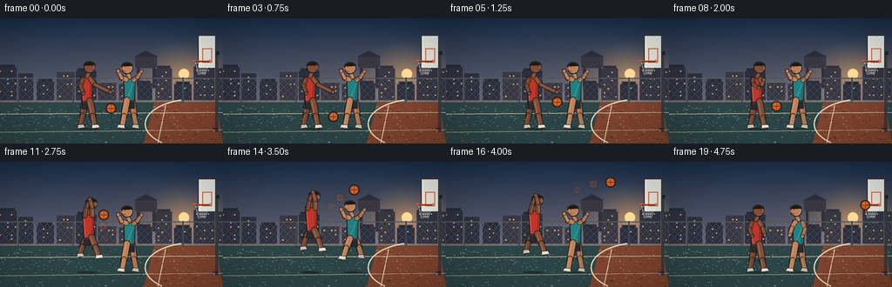
展开代码变化
--- 上一保存版本
+++ 本次保存版本
@@ -370,31 +370,36 @@
# Neck and head.
capsule(d, (shoulder[0] + 0.7 * facing, shoulder[1] - 1.4), (head[0] - 0.2 * facing, head[1] + 4.6), 4.0, rgba(skin), outline, 0.55, 0.13)
- hr = 7.4
+ hr = 6.7
d.ellipse([sc(head[0] - hr), sc(head[1] - hr), sc(head[0] + hr), sc(head[1] + hr)], fill=rgba(skin), outline=outline, width=sc(0.95))
- # Face plane and nose toward the action.
- face_x0 = head[0] + 0.2 * facing
- face_x1 = head[0] + 6.4 * facing
- d.ellipse(
- [sc(min(face_x0, face_x1)), sc(head[1] - 5.8), sc(max(face_x0, face_x1)), sc(head[1] + 4.0)],
- fill=rgba(lighten(skin, 0.08), 220),
- )
- nose_x = head[0] + 6.2 * facing
- d.polygon([pt(nose_x, head[1] - 0.5), pt(nose_x + 2.2 * facing, head[1] + 1.2), pt(nose_x - 0.2, head[1] + 2.0)], fill=rgba(skin, 255))
- eye = (head[0] + 3.0 * facing, head[1] - 1.4)
- d.ellipse([sc(eye[0] - 0.45), sc(eye[1] - 0.45), sc(eye[0] + 0.45), sc(eye[1] + 0.45)], fill=rgba((31, 26, 25), 245))
- # Short cropped hair and a subtle brow.
- d.pieslice([sc(head[0] - 7.5), sc(head[1] - 7.8), sc(head[0] + 7.2), sc(head[1] + 3.2)], 176, 356, fill=rgba((27, 25, 27), 255))
- d.arc([sc(head[0] - 6.8), sc(head[1] - 7.0), sc(head[0] + 6.9), sc(head[1] + 1.8)], 188, 342, fill=rgba((53, 43, 40), 200), width=sc(0.55))
- d.line([pt(head[0] + 1.7 * facing, head[1] - 3.1), pt(head[0] + 4.3 * facing, head[1] - 2.8)], fill=rgba((40, 29, 27), 230), width=sc(0.55))
- mouth_x0 = head[0] + 1.2 * facing
- mouth_x1 = head[0] + 5.1 * facing
+ # A directional cheek light and small nose give the head a face plane without
+ # the mask-like read that a full second oval creates at this resolution.
d.arc(
- [sc(min(mouth_x0, mouth_x1)), sc(head[1] + 2.2), sc(max(mouth_x0, mouth_x1)), sc(head[1] + 4.1)],
+ [sc(head[0] - 5.8), sc(head[1] - 5.4), sc(head[0] + 5.8), sc(head[1] + 5.2)],
+ 285,
+ 78,
+ fill=rgba(lighten(skin, 0.22), 120),
+ width=sc(0.8),
+ )
+ nose_x = head[0] + 5.7 * facing
+ d.polygon(
+ [pt(nose_x, head[1] - 0.8), pt(nose_x + 1.7 * facing, head[1] + 0.9), pt(nose_x - 0.1, head[1] + 1.7)],
+ fill=rgba(darken(skin, 0.06), 235),
+ )
+ eye = (head[0] + 2.8 * facing, head[1] - 1.5)
+ d.ellipse([sc(eye[0] - 0.38), sc(eye[1] - 0.38), sc(eye[0] + 0.38), sc(eye[1] + 0.38)], fill=rgba((31, 26, 25), 245))
+ # Short cropped hair, with a narrow highlight on the lit side.
+ d.pieslice([sc(head[0] - 6.9), sc(head[1] - 7.0), sc(head[0] + 6.7), sc(head[1] + 2.8)], 179, 355, fill=rgba((27, 25, 27), 255))
+ d.arc([sc(head[0] - 6.1), sc(head[1] - 6.4), sc(head[0] + 6.1), sc(head[1] + 1.4)], 194, 333, fill=rgba((70, 53, 46), 190), width=sc(0.55))
+ d.line([pt(head[0] + 1.6 * facing, head[1] - 3.0), pt(head[0] + 4.0 * facing, head[1] - 2.7)], fill=rgba((40, 29, 27), 210), width=sc(0.45))
+ mouth_x0 = head[0] + 1.6 * facing
+ mouth_x1 = head[0] + 4.6 * facing
+ d.arc(
+ [sc(min(mouth_x0, mouth_x1)), sc(head[1] + 2.0), sc(max(mouth_x0, mouth_x1)), sc(head[1] + 3.6)],
15,
160,
fill=rgba((72, 38, 32), 220),
- width=sc(0.55),
+ width=sc(0.45),
)
# Shorts.
@@ -566,9 +571,9 @@
126.0,
jump_o,
facing=1,
- jersey=(172, 55, 47),
+ jersey=(190, 54, 43),
shorts=(42, 42, 48),
- skin=(116, 69, 49),
+ skin=(131, 78, 54),
shoe=(232, 226, 211),
pose=pose_o,
frame=frame,
@@ -581,9 +586,9 @@
126.0,
jump_d,
facing=-1,
- jersey=(37, 115, 119),
+ jersey=(30, 130, 131),
shorts=(34, 42, 53),
- skin=(177, 117, 82),
+ skin=(190, 128, 88),
shoe=(226, 218, 196),
pose=pose_d,
frame=frame,
候选 03播放与检查图
点击播放 · 原生 RGB 像素

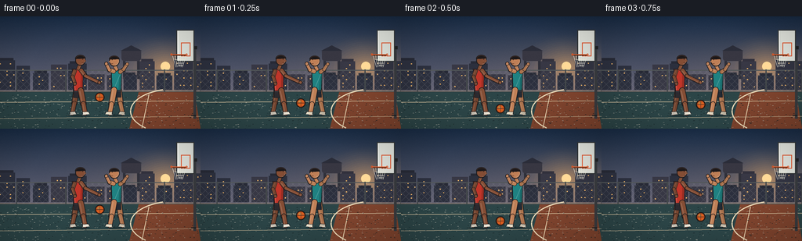
展开代码变化
--- 上一保存版本
+++ 本次保存版本
@@ -225,28 +225,28 @@
draw.line([pt(244, 127), pt(250, 127)], fill=rgba((28, 32, 35), 220), width=sc(1.3))
# Backboard with a restrained reflection and white target box.
- draw.rectangle([sc(227), sc(19), sc(248), sc(58)], fill=rgba((221, 226, 220), 188), outline=rgba((47, 53, 56), 245), width=sc(1.2))
- draw.line([pt(229, 21), pt(229, 56)], fill=rgba((255, 255, 255), 105), width=sc(0.8))
- draw.rectangle([sc(232.2), sc(34.5), sc(243.2), sc(51)], outline=rgba((221, 82, 44), 220), width=sc(1.0))
+ draw.rectangle([sc(225), sc(17), sc(248), sc(58)], fill=rgba((221, 226, 220), 188), outline=rgba((47, 53, 56), 245), width=sc(1.2))
+ draw.line([pt(227, 19), pt(227, 56)], fill=rgba((255, 255, 255), 105), width=sc(0.8))
+ draw.rectangle([sc(231.0), sc(33.5), sc(243.0), sc(51.0)], outline=rgba((221, 82, 44), 220), width=sc(1.0))
# Rim: slightly elliptical in this near-side view.
- draw.line([pt(222.7, 49.5), pt(240.8, 49.5)], fill=rgba((59, 36, 27), 245), width=sc(1.8))
- draw.line([pt(223.0, 48.7), pt(240.5, 48.7)], fill=rgba(rim, 255), width=sc(1.05))
- draw.ellipse([sc(221.7), sc(47.6), sc(224.1), sc(50.0)], outline=rgba(rim, 255), width=sc(0.65))
- draw.ellipse([sc(239.7), sc(47.6), sc(242.1), sc(50.0)], outline=rgba(rim, 255), width=sc(0.65))
+ draw.line([pt(218.5, 49.5), pt(238.0, 49.5)], fill=rgba((59, 36, 27), 245), width=sc(1.8))
+ draw.line([pt(218.8, 48.7), pt(237.7, 48.7)], fill=rgba(rim, 255), width=sc(1.05))
+ draw.ellipse([sc(217.5), sc(47.6), sc(219.9), sc(50.0)], outline=rgba(rim, 255), width=sc(0.65))
+ draw.ellipse([sc(236.9), sc(47.6), sc(239.3), sc(50.0)], outline=rgba(rim, 255), width=sc(0.65))
# Net sways after the ball arrives.
sway = 0.0
if frame >= 17:
sway = (frame - 17) * 0.8 * math.sin((frame - 17) * 1.5)
- for nx in np.linspace(224.2, 240.0, 6):
+ for nx in np.linspace(220.0, 237.2, 6):
top = (nx, 50.2)
- bottom = (231.2 + (nx - 232.1) * 0.48 + sway, 64.2 + abs(nx - 232.1) * 0.10)
+ bottom = (228.6 + (nx - 228.6) * 0.48 + sway, 64.2 + abs(nx - 228.6) * 0.10)
draw.line([pt(*top), pt(*bottom)], fill=rgba((236, 235, 220), 190), width=sc(0.55))
for level in (0.36, 0.68, 0.90):
yy = 50.2 + (64.2 - 50.2) * level
- xl = 224.2 + (231.2 + sway - 224.2) * level
- xr = 240.0 + (235.2 + sway - 240.0) * level
+ xl = 220.0 + (228.6 + sway - 220.0) * level
+ xr = 237.2 + (232.7 + sway - 237.2) * level
draw.line([pt(xl, yy), pt(xr, yy)], fill=rgba((236, 235, 220), 145), width=sc(0.45))
@@ -531,7 +531,7 @@
jump_o = [-5.0, -8.0, -11.5, -13.2, -12.0, -9.2, -5.6][idx]
jump_d = [0.0, -2.0, -4.5, -6.0, -4.0, -1.0, 0.0][idx]
else:
- ball = [(220.8, 37.8), (225.3, 49.8), (228.5, 57.5)][frame - 18]
+ ball = [(218.0, 36.5), (226.3, 48.6), (229.1, 58.0)][frame - 18]
pose_o, pose_d = "land", "land"
jump_o = [-2.0, 0.0, 0.0][frame - 18]
jump_d = [0.0, 0.0, 0.0][frame - 18]
@@ -547,7 +547,7 @@
for i in range(4):
angle = -1.2 + i * 0.8
r0 = 3.2 + pulse * 0.5
- x0 = 232.2 + math.cos(angle) * r0
+ x0 = 228.6 + math.cos(angle) * r0
y0 = 54.0 + math.sin(angle) * r0 * 0.55
d.line([pt(x0, y0), pt(x0 + math.cos(angle) * 4.0, y0 + math.sin(angle) * 2.2)], fill=rgba((247, 224, 174), 55), width=sc(0.5))
return Image.alpha_composite(image, overlay)
候选 04播放与检查图
点击播放 · 原生 RGB 像素
展开代码变化
--- 上一保存版本
+++ 本次保存版本
@@ -142,7 +142,7 @@
rng = np.random.default_rng(12)
noise = rng.normal(0.0, 1.55, (H, W, 1)).astype(np.float32)
sky += noise
- image = Image.fromarray(np.clip(sky, 0, 255).astype(np.uint8), "RGB").convert("RGBA")
+ image = Image.fromarray(np.clip(sky, 0, 255).astype(np.uint8)).convert("RGBA")
image = radial_glow(image, (211, 67), 67, (255, 181, 99), 135)
draw = ImageDraw.Draw(image, "RGBA")
@@ -632,7 +632,7 @@
rng = np.random.default_rng(1000 + frame)
grain = rng.normal(0.0, 1.15, (H, W, 1)).astype(np.float32)
arr = np.clip(arr + grain, 0, 255).astype(np.uint8)
- return Image.fromarray(arr, "RGB")
+ return Image.fromarray(arr)
def main():
可观测工具轨迹
实际执行的命令与返回图片。
命令 1exit 0
/bin/bash -c "pwd && rg --files -g 'prompt.txt' -g 'GENERATION_RULES.md' -g 'task_spec.json' -g '"'!**/.git/**'"'"
命令 2exit 0
/bin/bash -c "find . -maxdepth 2 -type f | sort | sed -n '1,200p'"
命令 3exit 0
/bin/bash -c 'cat prompt.txt'
命令 4exit 0
/bin/bash -c 'cat GENERATION_RULES.md'
命令 5exit 0
/bin/bash -c 'cat task_spec.json'
命令 6exit 0
/bin/bash -c "sed -n '1,240p' artifact_io.py"
命令 7exit 1
/bin/bash -c 'python generate.py'
命令 8exit 1
/bin/bash -c 'python generate.py'
命令 9exit 0
/bin/bash -c 'python generate.py'
命令 10exit 0
/bin/bash -c 'which magick || which convert || true'
命令 11exit 1
/bin/bash -c "python - <<'PY'
from PIL import Image
for i in [0,4,8,12,16,18,19]:
im=Image.open(f'frames/{i:02d}.png')
im.resize((768,432),Image.Resampling.NEAREST).save(f'/tmp/frame_{i:02d}_x3.png')
PY"命令 12exit 0
/bin/bash -c "mkdir -p .tmp && python - <<'PY'
from PIL import Image
for i in [0,4,8,12,16,18,19]:
im=Image.open(f'frames/{i:02d}.png')
im.resize((768,432),Image.Resampling.NEAREST).save(f'.tmp/frame_{i:02d}_x3.png')
PY"命令 13exit 0
/bin/bash -c "rg -n \"torso =|face plane|pieslice|mouth_x0|def draw_player|draw_player\\(\" generate.py"
命令 14exit 0
/bin/bash -c "sed -n '320,430p' generate.py"
命令 15exit 0
/bin/bash -c 'mkdir -p .tmp/candidate_v1 && cp inspection.png transition_check.png .tmp/candidate_v1/ && cp -r frames .tmp/candidate_v1/'
命令 16exit 0
/bin/bash -c 'python generate.py'
命令 17exit 0
/bin/bash -c 'mkdir -p .tmp/candidate_v2 && cp inspection.png transition_check.png .tmp/candidate_v2/ && cp -r frames .tmp/candidate_v2/'
命令 18exit 0
/bin/bash -c "python - <<'PY'
from PIL import Image
for i in [17,18,19]:
im=Image.open(f'frames/{i:02d}.png')
im.crop((205,25,250,75)).resize((360,400),Image.Resampling.NEAREST).save(f'.tmp/rim_{i}.png')
PY"命令 19exit 0
/bin/bash -c "sed -n '490,550p' generate.py"
命令 20exit 0
/bin/bash -c "sed -n '215,285p' generate.py"
命令 21exit 0
/bin/bash -c 'python generate.py'
命令 22exit 0
/bin/bash -c "python - <<'PY'
from PIL import Image
for i in [17,18,19]:
im=Image.open(f'frames/{i:02d}.png')
im.crop((205,25,250,75)).resize((360,400),Image.Resampling.NEAREST).save(f'.tmp/final_rim_{i}.png')
PY"命令 23exit 0
/bin/bash -c "python generate.py && python - <<'PY'
import hashlib, json
from pathlib import Path
import numpy as np
from PIL import Image
spec=json.loads(Path('task_spec.json').read_text())
frames=sorted(Path('frames').glob('*.png'))
print('spec', spec)
print('frames', len(frames))
print('sizes', sorted({Image.open(p).size for p in frames}))
print('modes', sorted({Image.open(p).mode for p in frames}))
pix=np.load('pixels.npz')['pixels']
print('pixels', pix.shape, pix.dtype, int(pix.min()), int(pix.max()))
print('html', Path('index.html').stat().st_size)
print('npz', Path('pixels.npz').stat().st_size)
print('sha256', hashlib.sha256(Path('pixels.npz').read_bytes()).hexdigest())
PY"命令 24exit 0
/bin/bash -c 'sha256sum pixels.npz > .tmp/run1.sha && python generate.py >/dev/null && sha256sum pixels.npz > .tmp/run2.sha && diff -u .tmp/run1.sha .tmp/run2.sha && cat .tmp/run2.sha'
命令 25exit 0
/bin/bash -c "python - <<'PY'
from pathlib import Path
from PIL import Image, ImageChops, ImageStat
import numpy as np
paths=sorted(Path('frames').glob('*.png'))
frames=[Image.open(p).convert('RGB') for p in paths]
diffs=[]
for a,b in zip(frames,frames[1:]):
d=np.asarray(ImageChops.difference(a,b),dtype=np.float32)
diffs.append((float(d.mean()), float(np.percentile(d,95))))
print('adjacent mean/p95', diffs)
print('blank_pixels', [int((np.asarray(im).max(axis=2)<8).sum()) for im in frames[:3]])
print('unique_colors', [len(im.getcolors(maxcolors=1000000) or []) for im in (frames[0],frames[10],frames[19])])
PY"命令 26exit 0
/bin/bash -c "python - <<'PY'
from pathlib import Path
from PIL import Image
import re
html=Path('index.html').read_text()
print('artifacts')
for name in ['generate.py','task_spec.json','pixels.npz','index.html','inspection.png','transition_check.png']:
p=Path(name); print(name, p.exists(), p.stat().st_size)
print('frame_files', len(list(Path('frames').glob('*.png'))))
print('player_payload', 'const data =' in html or 'id=\"app\"' in html, 'script_close', html.rstrip().endswith('</html>'))
print('html_has_data', '__DATA__' not in html)
PY"命令 27exit 0
/bin/bash -c "sed -n '1,80p' index.html"
视觉工具实际返回图片 1
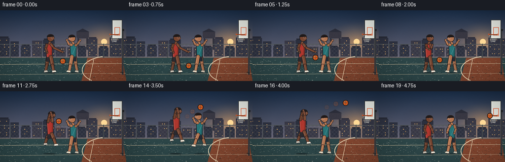
视觉工具实际返回图片 2
视觉工具实际返回图片 3
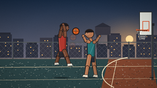
视觉工具实际返回图片 4
视觉工具实际返回图片 5
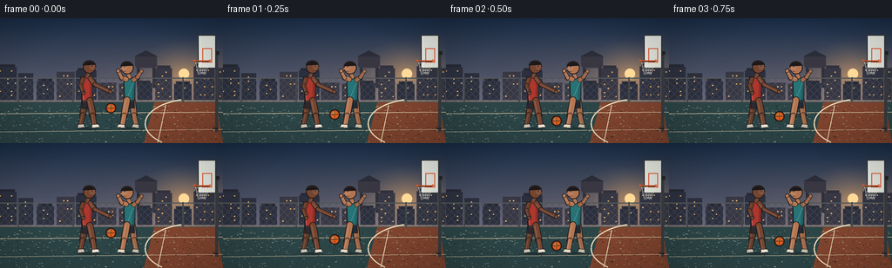
视觉工具实际返回图片 6
视觉工具实际返回图片 7
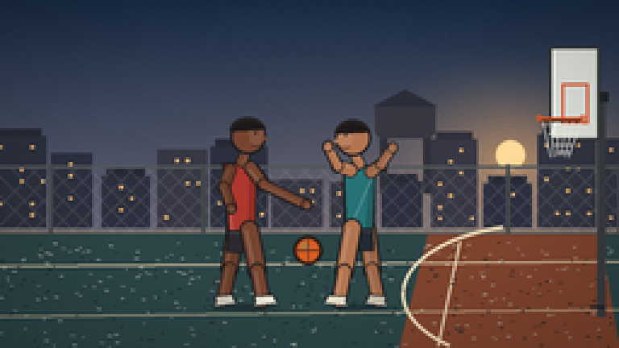
视觉工具实际返回图片 8
视觉工具实际返回图片 9
视觉工具实际返回图片 10
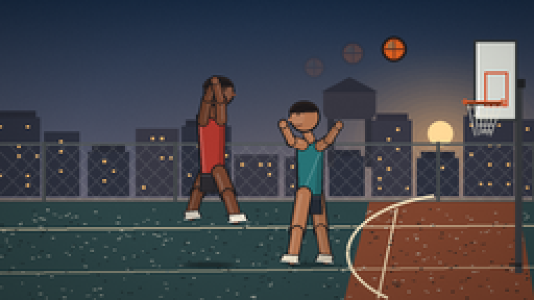
视觉工具实际返回图片 11
视觉工具实际返回图片 12

视觉工具实际返回图片 13
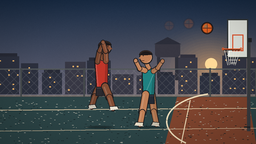
视觉工具实际返回图片 14
视觉工具实际返回图片 15
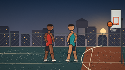
视觉工具实际返回图片 16
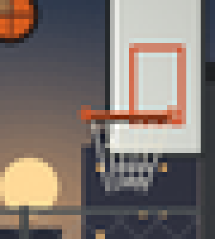
视觉工具实际返回图片 17
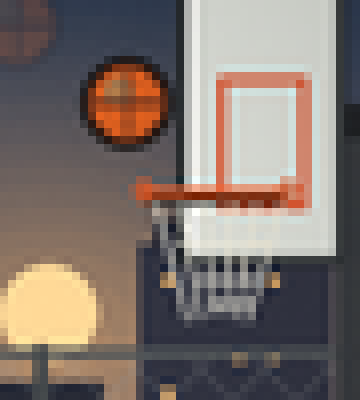
视觉工具实际返回图片 18
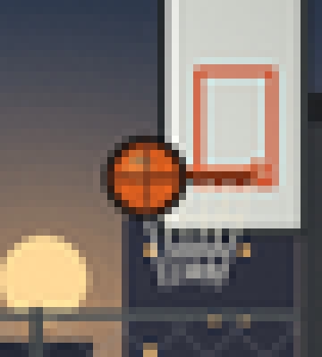
视觉工具实际返回图片 19

视觉工具实际返回图片 20
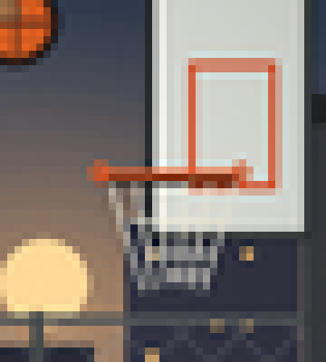
视觉工具实际返回图片 21
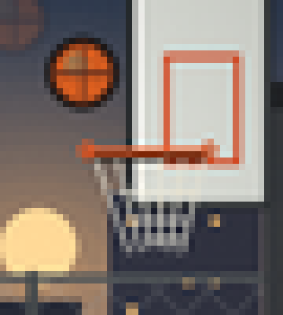
视觉工具实际返回图片 22
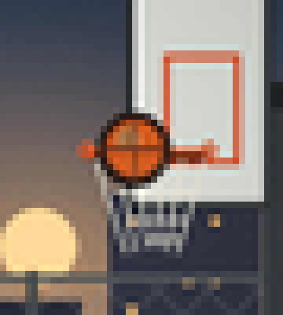
保存候选 4 份；完成命令 27 次；可验证图片返回 22 张。原始 API 响应与完整日志保留在本地。